ԲՆՈՒԹԱԳԻՐ
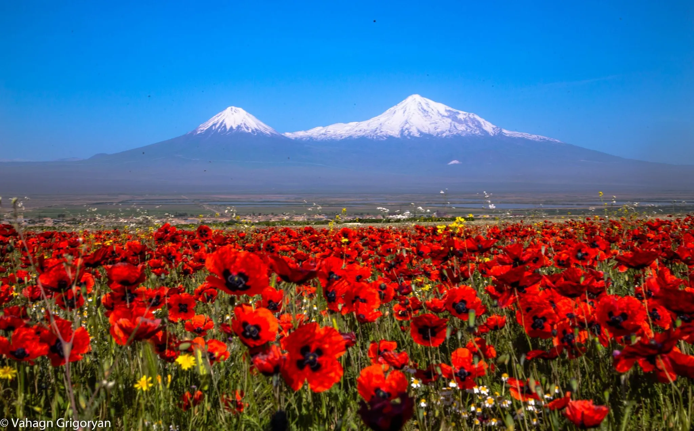
ՏՎՅԱԼՆԵՐ
Ուղղություն
Հյուսիսից
Հյուսիս-արևմուտքից
Արևմուտքից
Հարավ-արևմուտքից
Արևելքից
Հարավ-արևելքից
Հարավից
Սահմանակից մարզ
Կոտայք, Երևան
Արմավիր
-
-
Գեղարքունիք
Վայոց Ձոր
-
Հարևան երկրներ
-
-
Թուրքիա
Թուրքիա
-
-
/ՆԻՀ/
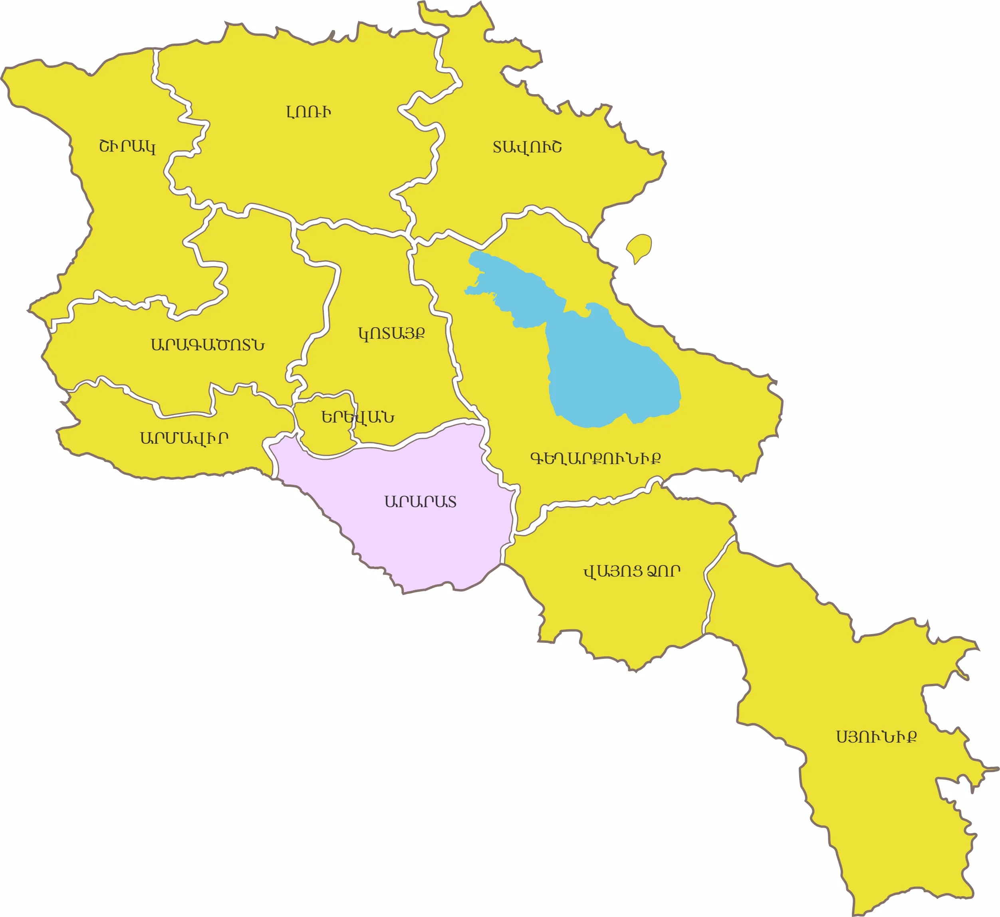
Հիմնադրումը
ՀՀ Արարատի մարզը ստեղծվել է 1995 թվականի ապրիլի 12-ին։
Տարածքը
Արարատի մարզը զբաղեցնում է Հայաստանի ամբողջ տարածքի մոտ 7.1%-ը (2 096 կմ²)
Վարչական կենտրոնը
Աշտարակ՝ մարզի ամենախոշոր քաղաքը: Գտնվում է Երևանից 20 կմ հյուսիս-արևմուտք։ Տարածքը բնակեցված է հնագույն ժամանակներից, գրավոր աղբյուրներում՝VII դարից: Քաղաքային բնակավայր է IX–X դարերից, Բագրատունիների թագավորության շրջանում։
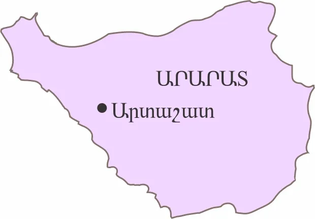
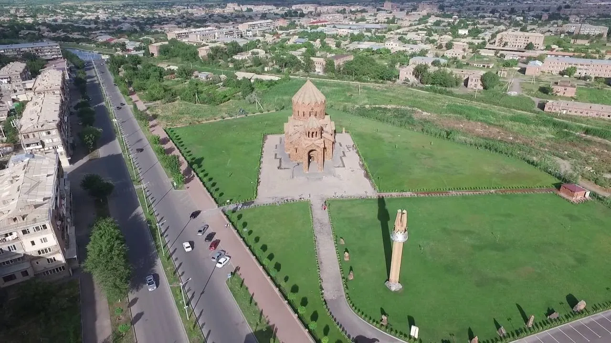
Ցուցիչ
Տարածք
Կոորդինատներ
Բարձրություն
Ամենաբարձր գագաթ
Վարչական կենտրոն
Տարածաշրջաններ
Քաղաքներ
Գյուղեր
Բնակչություն
Հեռավորություն Երևանից
Փոստային դասիչ
Թեժ գիծ
Վեբ կայք
Տվյալ
2,096 քառ. կմ
39°49'53.98" հս. լ
800 – 3,550 մ
Սպիտակասար լեռ (3,555 մ)
Արտաշատ
Արարատ, Արտաշատ, Մասիս
Արտաշատ, Մասիս, Արարատ, Վեդի
91
258,400 (8.2%)
50 կմ
0601 – 0823
(+374 235) 2 68 50
www.ararat.mtad.am
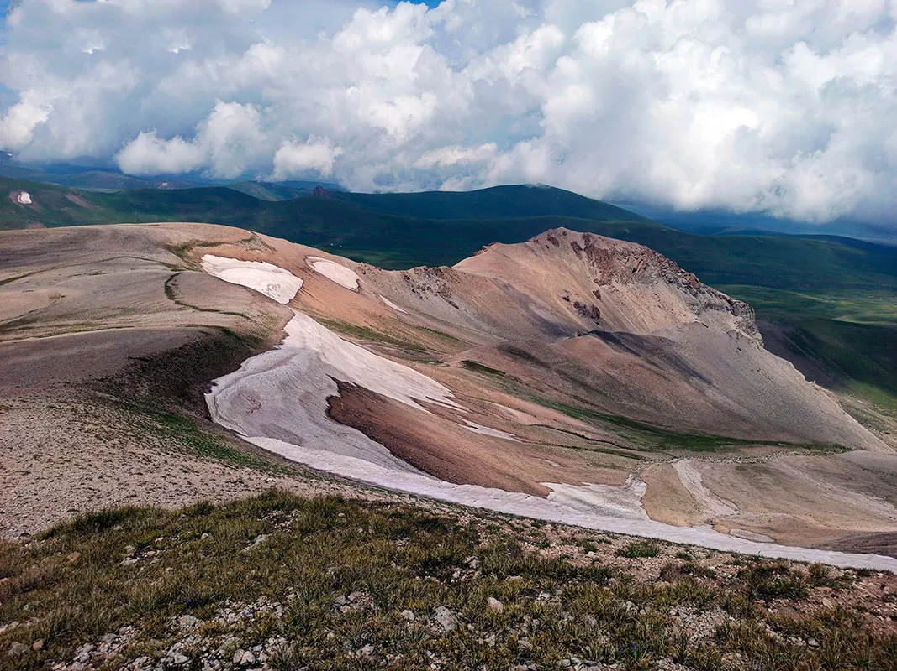
Ամենաբարձր գագաթ Սպիտակասար լեռ (3,555 մ)
Մարզային հեռախոսային կոդեր
Բնակավայր
Արտաշատ
Արարատ
Մասիս
Վանաշեն
Վեդի
Վեդի (CDMA)
Ուրցաձոր
Կոդ
235
238
236
234
234
234
234
Մարզպետարան/Կապ
Հասցե․ ք. Արտաշատ, Օգոստոսի 23-ի փողոց 60
Հեռ․ (+374) 10 25 60 23, (+374) 23 52 52 26
Ֆաքս․ (+374) 23 52 52 16
Էլ․ հասցե․ ararat.qartughar@mta.gov.am
Վեբ․ www.ararat.mtad.am
ԻՆՉՊԵՍ ՀԱՍՆԵԼ
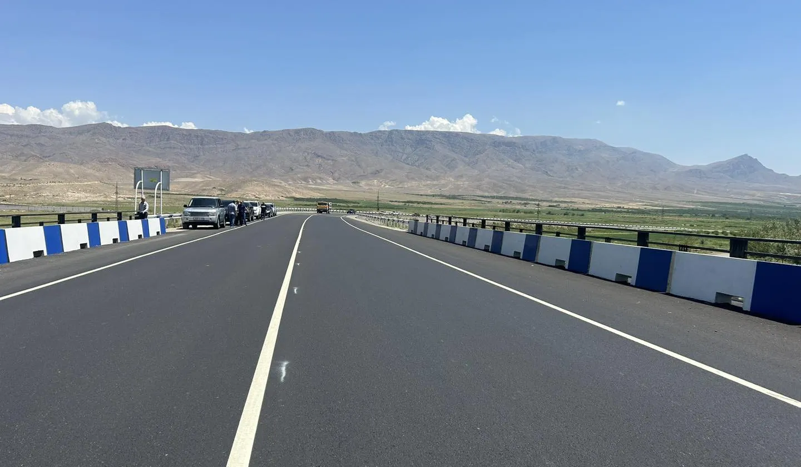
Ավտոմայրուղիներ
Արարատի մարզով անցնում է հանրապետական նշանակության Երևան–Երասխ ավտոմայրուղին։
Երթուղային տաքսի և ավտոբուս
- Երևանից դեպի Արտաշատ ուղևորությունը տևում է մոտ 1 ժ 10 ր․
- Մեքենաները շարժվում են Կենտրոնական երկաթուղային կայարանից և Հյուսիսային ավտոկայանից։
-
Տոմսի արժեքը․
- Երևան–Մասիս ավտոբուս՝ 200 դրամից,
- Երևան–Արարատ ավտոբուս՝ 500 դրամ,
- Երևան–Արարատ երթուղային տաքսի՝ 400–500 դրամ։
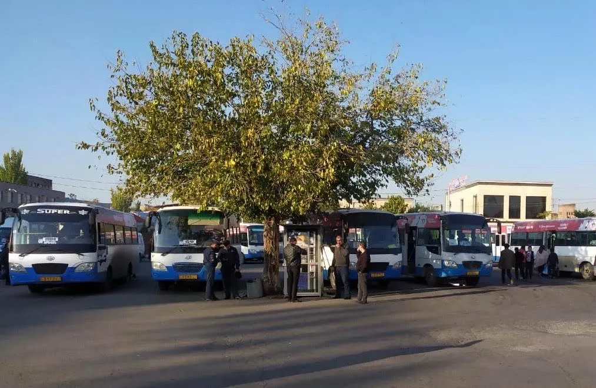
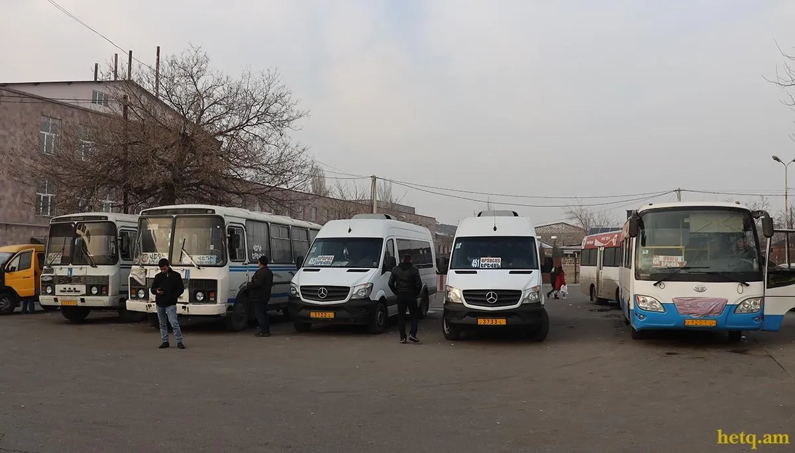
Միկրոավտոբուսներ («Mercedes Sprinter»)
- Գործում են ուղևորափոխադրումներ դեպի Երևան։
- Կոնտակտ՝ 094 51 41 03։
Երկաթուղի
- Մարզով անցնում է Երևան–Երասխ երկաթուղին։
- Երևանից Երասխ ուղևորությունը տևում է մոտ 1 ժ 48 ր․։
- Էլեկտրագնացքը Երևանից մեկնում է ամեն օր՝ 19:00, Երասխից՝ 06:30։
-
Տոմսի արժեքը․
- մինչև Զոդ կայարան՝ 350 դրամ, 06:30։
- մինչև Սուրենավան, Արմաշ, Երասխ՝700 դրամ։
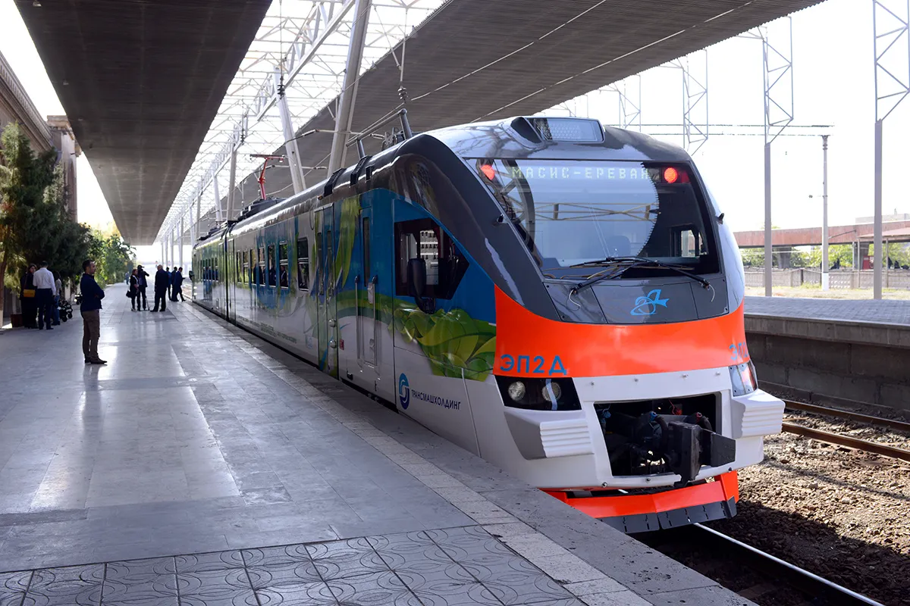
ԿԼԻՄԱ
Արարատի մարզը գտնվում է Հայաստանի արևմտյան մասում, ընդգրկում է Արարատյան դաշտի արևելյան հատվածը։ Մարզին բնորոշ է կլիմայի չորությունը։ Ձմռանը միջին գոտում մինչև 2000 մ բարձրության վրա եղանակը ավելի տաք ու արևոտ է, քան Արարատյան գոգավորությունում։
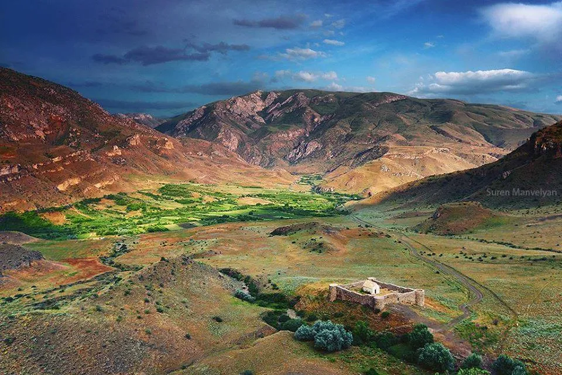
Կլիմայի առանձնահատկություններ
- Ցածրադիր և հարթավայրային շրջաններում՝ մեղմ ձմեռ, զով ամառ՝ միջին +26°C, հաճախ արևոտ
- Բարձրադիր ու լեռնային գոտիներում՝ խիստ ձմեռ, զով ամառ
- Ամառային ամիսներին հովիտներում Գեղամա լեռներից փչող քամիները մեղմացնում են տապը
- Մայիսի կեսերից սկսած ջերմաստիճանը անցնում է +15 °C, որին հաջորդում է չոր, հաճախ խորշակներով ամառը, որը տևում է մինչև սեպտեմբերի 2-րդ կեսը։
Եղանակների բնութագիր
Ձմեռ - երկարատև, ցրտաշունչ, հաճախ քամոտ, կայուն ձնածածկույթ (մինչև 140–160 օր), հանդիպում են բուքեր։
Ամառ - չոր և հաճախ շոգ, զով ու արևոտ (+16…+26°C), հազվադեպ՝ շոգ օրերով։
Գարուն – կարճատև ու անցողիկ է, խոնավ, տեղումնառատ, հաճախ ամպրոպներով ու կարկուտով։
Աշուն – սկզբում մեղմ ու արևոտ, ապա հաճախ անձրևոտ սառնաշունչ ու մառախուղներով։
Ջերմաստիճան
- Օդի միջին տարեկան ջերմաստիճանը տատանվում է +10°C-ից +13°С է (ցածրադիր),+ 6°С ից-2 °C (բարձրադիր)։
- Հունվարի միջին ջերմաստիճանը՝ -4°C … -12 °C։
- Հուլիսի միջին ջերմաստիճանը՝ +26 °C
-
Ցածրադիր վայրերում գրանցված են Հայկական լեռնաշխարհի
բացարձակ առավելագույն և նվազագույն ջերմաստիճանները․
- Ամենացածր՝ -33 °C։
- Ամենաբարձր՝ +42 °C (Արարատյան հարթավայրի հարավ-արևելք)։
Տեղումներ
-
Տարեկան միջին՝ 200–300 մմ (ցածրադիր)
- Տարեկան միջին՝ 350–600 մմ, մինչև 1,000 մմ (բարձրադիր)
- Մնացած հատվածներում՝ 250-700 մմ:
- Ամենաչոր ամիս՝ օգոստոս, տեղումների երկու մաքսիմում՝ մայիս, նոյեմբեր
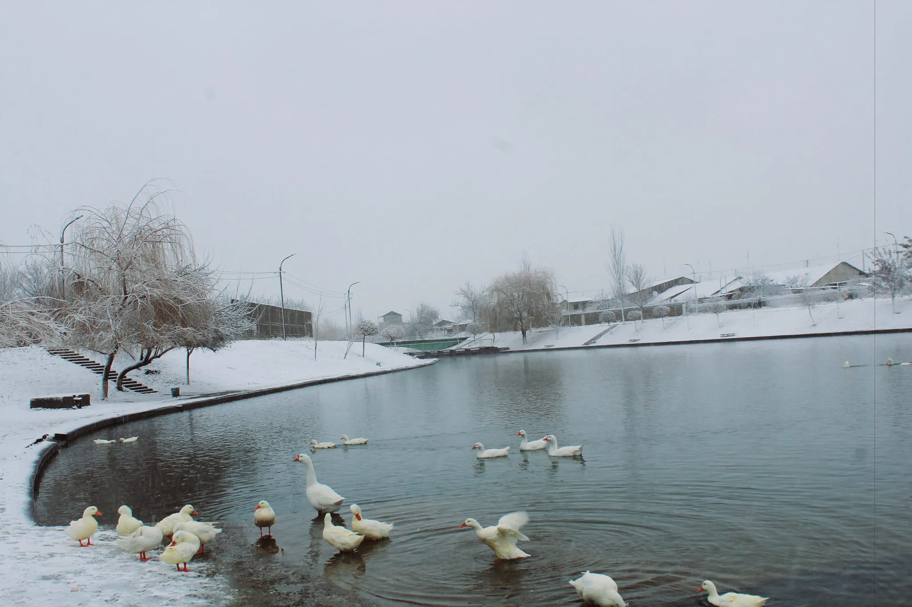
Քամիներ
- Հարթավայրերին բնորոշ են լեռնահովտային քամիները։
- Ամռանը, կեսօրից հետո, Գեղամա լեռներից փչող քամիները մեղմացնում են հովիտների տապը
- Քամու միջին տարեկան արագությունը կազմում է 1-2մ/վ, առավելագույնը ՝ 18-22մ/վ, լեռնային շրջաններում՝ մինչև 35մ/վ, պոռթկումը` 40մ/վ:
Արևափայլ
- Մարզը բնութագրվում է չափազանց առատ արևափայլով՝ միջին տարեկան տևողությունը հասնում է 2471-2968 ժամ /տարի:
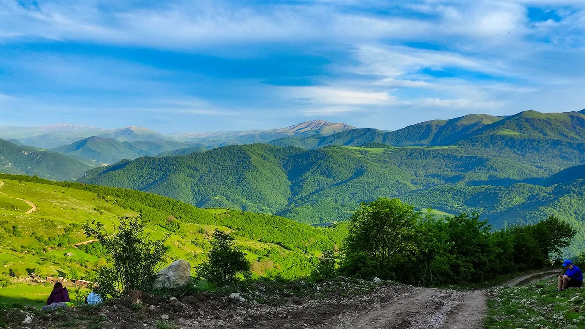